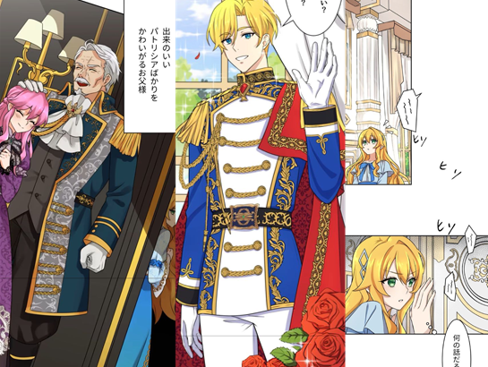
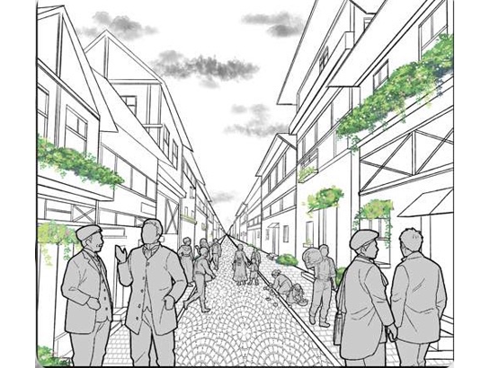
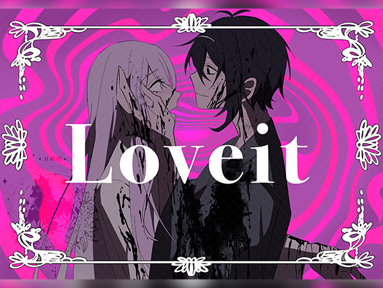
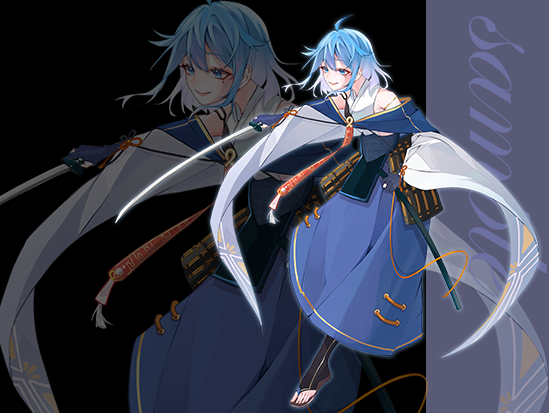
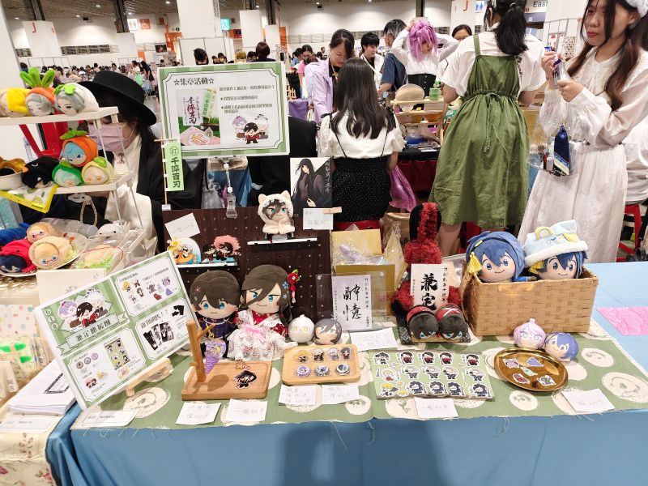
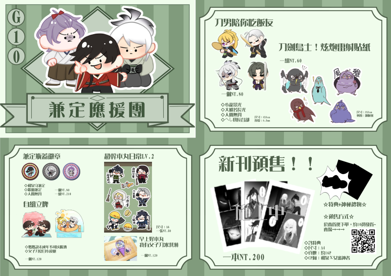
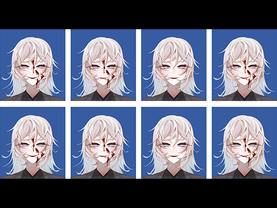
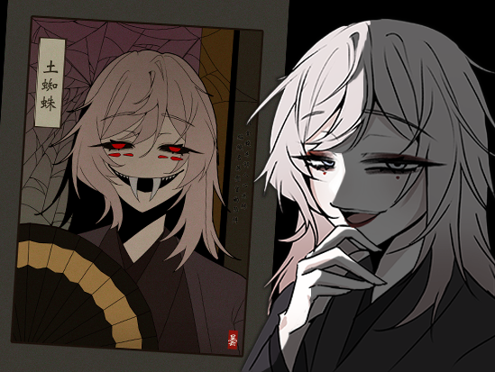

Experience / Creative Practice
經歷紀錄
記錄創作與實作過程中累積的經驗， 從商業合作、個人委託到活動參與與原創作品， 展現不同面向的創作。
01 / Commercial Project
商業專案
曾參與漫畫背景製作相關商業專案。


經歷補充
專案內容：漫畫背景製作與上色。 大學期間在老師的介紹下參與漫畫製作，依據專案需求完成背景繪製與上色。 這次經驗讓我理解商業創作對品質與時程的要求，也體會到團隊合作的重要性。
02 / Commission
個人委託
重視需求溝通與創作細節，將委託者的想法逐步轉化為完整作品。


首次的嘗試
這兩件作品皆為我首次嘗試的風格，其中戰鬥立繪更是一次重要的突破。 製作過程中，我透過與委託人的溝通釐清需求，並針對甲冑結構、持刀姿勢等細節進行資料蒐集與研究， 將研究成果融入畫面表現，也藉此拓展了自身的設計能力與經驗。
03 / Event & Goods
NiCE 2 創·迴響
從規劃周邊製作到現場販售，第一次的嘗試參與體驗過程。


經歷補充
將角色與想法轉化為實體周邊，是一次很特別的嘗試。 看見自己的作品被欣賞與收藏，也讓我更有動力持續投入創作。
04 / Original Creation
原創創作
從外型設計到性格背景，逐步建構角色設定，賦予每個角色獨特的個性與故事。


角色設定｜曇
角色概念
曇是一名歷經數百年歲月、在人世間輾轉遊蕩的蜘蛛妖怪，後成為一名審神者。她外表雍容優雅，舉止溫文有禮，性格卻隨性慵懶， 以自身喜好與利益為優先，展現出優雅外貌與妖怪本性之間的反差。
外貌與象徵
紫灰色中長髮、淺藍色下垂眼，搭配嬌小的身形，營造出柔和而慵懶的氣質。角色代表花為「大岩桐」，以其華麗的花姿象徵雍容華貴與慾望， 呼應曇優雅外表下隱藏的妖性。
身世背景
角色身世參考《太平記》與《土蜘蛛草紙》的土蜘蛛傳說。相傳源賴光與家臣渡邊綱追逐飛空的骷髏，並在古厝中與妖怪交戰。 黎明時分，一名美麗女子現身，卻在遭到源賴光斬擊後消失，只留下一道血痕。循著血跡深入山洞，源賴光最終斬殺了巨大的山蜘蛛， 並在其腹中發現大量顱骨，山蜘蛛身側亦爬出無數小蜘蛛。曇便是當時倖存的小蜘蛛之一。 歷經數百年的人世遊蕩後，她以自己的方式延續著漫長的生命。
More Works
繼續瀏覽我的作品。
回到作品集，查看角色設計、漫畫分鏡與插畫。